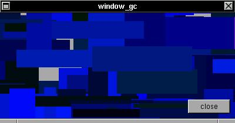

A graphic context (GC) is a standard way in the X Window System to draw inside any widget (any XSTEP widget are by default created with a GC). To use the GC, you must get a small set of magic values from the xtree structure of the widget:EXAMPLEIn future, this section will be enhanced to be more clean :)t->aw is the real width of a widget t->ah is the real height of a widget t->gc is the defalt GC of a widget t->win is the subwindow of a widget display and screen are the display and screen of a widget.
This is a example how use the GC of any XSTEP window: work just how any GC inside a box or group. Please see how create an animation :) To use a GC the good way is see the xsteptask and xstepgears applications.#include <xstep.h> void draw(struct xtree *t) { if(!animate) return; XSetForeground(display,t->gc,rand()%256); XFillRectangle(display,t->win,t->gc, t->aw/2+rand()%t->aw-rand()%t->aw, t->ah/2+rand()%t->ah-rand()%t->ah, rand()%t->aw/4,rand()%t->ah/4); } void xmain(int n,char *p[]) { struct xtree *win; win=window_create(0,0,400,180,"window_gc"); win->broadcast=draw; animate=1; button_create(-8,-8,72,24,"close",window_close); }